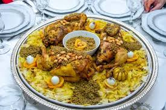

Refissa

Description
Rfissa is a traditional Moroccan dish known for its comforting and aromatic flavors. It is typically prepared with tender chicken, lentils, and a rich, spiced sauce infused with saffron, turmeric, and Ras el Hanout. The dish is served over **trid**, a type of flaky Moroccan flatbread that absorbs the flavorful sauce, making it soft and delicious. Often enjoyed during special occasions or family gatherings, Rfissa is a symbol of Moroccan hospitality and is particularly popular during celebrations like the birth of a child. Its warm, hearty nature makes it a beloved staple in Moroccan cuisine.
Ingredients
- 1 whole chicken, cut into pieces
- 3 large onions, finely sliced
- 1/2 cup olive oil
- 2 cups lentils, soaked
- 1 teaspoon turmeric
- 1 teaspoon ground ginger
- 1/2 teaspoon saffron threads
- 1 teaspoon Ras el Hanout (Moroccan spice blend)
- Salt and pepper to taste
- 2 tablespoons smen (Moroccan preserved butter) or regular butter
- 1 bunch of fresh parsley and cilantro, tied together
- 3 cups of broth or water
- Trid (Moroccan flatbread), torn into pieces
Steps to Make Moroccan Rfissa
- Heat olive oil in a large pot over medium heat. Add the chicken pieces and cook until lightly browned.
- Add the sliced onions to the pot and sauté until soft and fragrant.
- Mix in the turmeric, ground ginger, saffron threads, Ras el Hanout, salt, and pepper. Stir well to coat the chicken and onions with the spices.
- Add the lentils, smen (or butter), and the bunch of parsley and cilantro to the pot.
- Pour in the broth or water, ensuring the chicken is submerged. Bring the mixture to a boil.
- Reduce the heat to low, cover the pot, and let it simmer for about 1.5 hours, or until the chicken and lentils are tender.
- While the chicken cooks, prepare the trid (Moroccan flatbread) by tearing it into bite-sized pieces and arranging them on a large serving platter.
- Once the chicken is fully cooked, remove the bunch of parsley and cilantro and discard.
- Pour the lentils, onion sauce, and chicken over the trid on the serving platter. Make sure the flatbread absorbs the flavorful sauce.
- Serve warm, and enjoy this comforting Moroccan dish!